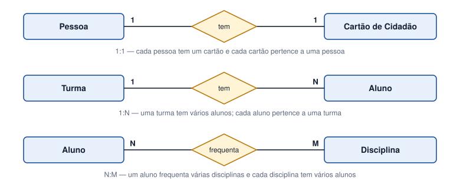

Tema 10 · Modelação de dados
Relacionamentos entre entidades
Tipos de relacionamentos e cardinalidade
Os dados raramente vivem isolados. Um empréstimo liga um leitor a um livro; um aluno pertence a uma turma. Um relacionamento exprime essa ligação e dá-lhe um nome, normalmente um verbo.
Cardinalidade
A cardinalidade indica quantas ocorrências de uma entidade podem estar associadas a uma ocorrência da outra. Lê-se nos dois sentidos.

| Tipo | Leitura | Exemplo |
|---|---|---|
| 1:1 (um para um) | Cada A está ligado a, no máximo, um B, e vice-versa. | Pessoa — Cartão de Cidadão |
| 1:N (um para muitos) | Cada A pode ter muitos B, mas cada B tem apenas um A. | Turma — Aluno |
| N:M (muitos para muitos) | Cada A pode ter muitos B e cada B pode ter muitos A. | Aluno — Disciplina |
Participação obrigatória e opcional
Além da cardinalidade, convém saber se a participação é obrigatória (um Aluno tem sempre de pertencer a uma Turma) ou opcional (um Leitor pode ainda não ter feito nenhum empréstimo). Esta informação ajuda mais tarde a definir se os atributos podem ficar vazios.
Relacionamentos N:M
Num relacionamento N:M, muitas vezes há dados que pertencem à ligação e não a cada entidade: a nota de um Aluno a uma Disciplina, a data de um Empréstimo. Nestes casos, o relacionamento transforma-se numa entidade associativa, com os seus próprios atributos. É o que acontece com o Empréstimo, que liga Leitor a Exemplar.
Atividade
Identificar e representar relacionamentos 1:1, 1:N e N:M
Para cada par de entidades, indique a cardinalidade (1:1, 1:N ou N:M), dê um nome ao relacionamento e represente-o com a notação da figura 10.1.
- Cliente — Encomenda
- Autor — Livro
- Professor — Turma (como diretor de turma)
- Aluno — Cartão de estudante
- Produto — Categoria
- Leitor — Livro (através de empréstimos)
Ver proposta de resolução
| Par | Relacionamento | Cardinalidade | Justificação |
|---|---|---|---|
| Cliente — Encomenda | faz | 1:N | Um cliente faz várias encomendas; cada encomenda é de um só cliente. |
| Autor — Livro | escreve | N:M | Um autor escreve vários livros; um livro pode ter vários autores. |
| Professor — Turma | dirige | 1:1 | Cada turma tem um só diretor de turma e, em regra, cada professor dirige uma turma. |
| Aluno — Cartão de estudante | possui | 1:1 | Cada aluno tem um cartão, que pertence só a ele. |
| Produto — Categoria | pertence a | N:1 (1:N visto da categoria) | Cada produto está numa categoria; uma categoria tem vários produtos. |
| Leitor — Livro | requisita | N:M | Um leitor requisita vários livros; um livro é requisitado por vários leitores ao longo do tempo. Resolve-se com a entidade Empréstimo. |
Em resumo
- Um relacionamento associa entidades e tem um nome, normalmente um verbo.
- A cardinalidade pode ser 1:1, 1:N ou N:M e lê-se nos dois sentidos.
- A participação pode ser obrigatória ou opcional.
- Os relacionamentos N:M com dados próprios dão origem a entidades associativas.